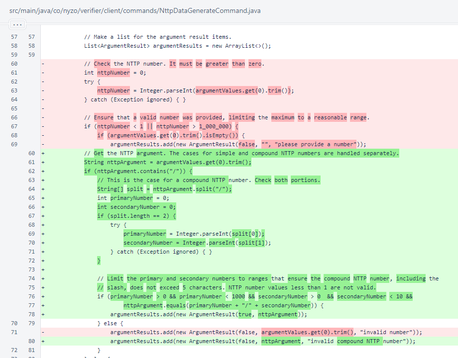
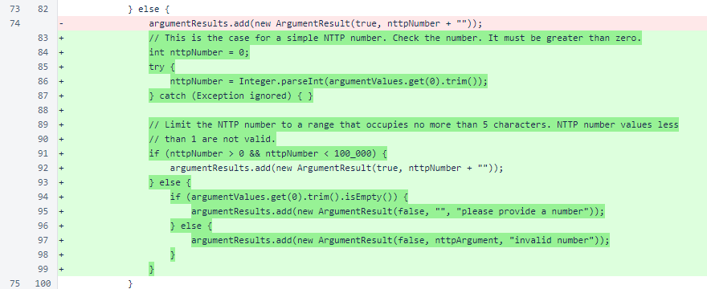

Nyzo version 566 (commit on GitHub) adds support for compound NTTP numbers to NttpDataGenerateCommand.
This version affects only the client.
NTTP-3 has 3 parts. To express support for just one part, but not the entire proposal, the cycle must approve a cycle transaction for NTTP-3/1, NTTP-3/2, or NTTP-3/3. Previously, NttpDataGenerateCommand only allowed integers to be used for NTTP numbers. This version adds support for compound NTTP numbers such as those needed for partial approval of NTTP-3.
In NttpDataGenerateCommand.validate(), a check is now performed to see if the NTTP number contains a forward slash. If it does, the two components are checked for validity. The sender-data field is 32 bytes. The git hash occupies 20 bytes, and the required characters of the NTTP prefix ("NTTP-" and ": ") occupy 7 bytes. This leaves 5 bytes for the NTTP number. A compound NTTP would not reasonably have more than 10 parts, so only one digit is used for the secondary NTTP number, leaving 3 digits for the primary NTTP number. The remaining character is consumed by the forward slash in a compond NTTP number. The character limits are enforced as numerical ranges on the primary and secondary NTTP numbers.
Simple NTTP numbers are handled as before, but the range is now limited to ensure the number does not occupy more than 5 characters.
In NttpDataGenerateCommand.run(), the NTTP number is no longer parsed to an integer. This parsing should be unnecessary, as the validate() method is responsible for ensuring appropriateness of inputs.